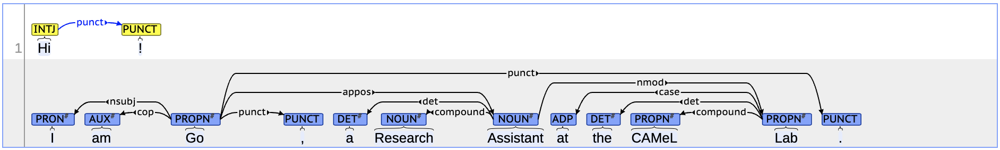

Go Inoue

Hi! I am a PhD student at Mohamed bin Zayed University of Artificial Intelligence (MBZUAI), Abu Dhabi, United Arab Emirates.
My research interest is in natural language processing (NLP) and computational linguistics, in particular, NLP across different domains, i.e. genres, dialects, and languages.
Examples of this topic include morphosyntactic modeling for Arabic and its dialects (Inoue et al., 2022), investigating the interplay of various aspects in pre-trained language models for Arabic and its dialects (Inoue et al., 2021), machine translation for distant language pairs under limited resource conditions, such as Arabic and Japanese (Inoue et al., 2018).
Keywords: Arabic NLP (Morphology, Syntax), Language Variation, Linguistic Similarities and Differences
Google Scholar;
GitHub;
LinkedIn
News
Publications
- Ossama Obeid, Go Inoue, Nizar Habsh. Camelira: An Arabic Multi-Dialect Morphological Disambiguator. In Proceedings of the 2022 Conference on Empirical Methods in Natural Language Processing: System Demonstrations. [To appear]
- Dana Abdulrahim, Go Inoue, Latifa Shamsan, Salam Khalifa and Nizar Habash. 2022. The Bahrain Corpus: A Multi-genre Corpus of Bahraini Arabic. In Proceedings of the Thirteenth International Conference on Language Resources and Evaluation (LREC 2022), Marseille, France. European Language Resources Association (ELRA). [paper]
- Go Inoue, Salam Khalifa, Nizar Habash. 2022. Morphosyntactic Tagging with Pre-trained Language Models for Arabic and its Dialects. In Findings of the Association for Computational Linguistics: ACL 2022, pages 1708–1719, Dublin, Ireland. Association for Computational Linguistics. [paper]
- Go Inoue, Bashar Alhafni, Nurpeiis Baimukan, Houda Bouamour, Nizar Habash. 2021. The Interplay of Variant, Size, and Task Type in Arabic Pre-trained Language Models. In Proceedings of the Sixth Arabic Natural Language Processing Workshop, pages 92–104, Kyiv, Ukraine (Virtual). Association for Computational Linguistics. [paper]
- Ossama Obeid, Nasser Zalmout, Salam Khalifa, Dima Taji, Mai Oudah, Bashar Alhafni, Go Inoue, Fadhl Eryani, Alexander Erdmann, Nizar Habash. 2020. CAMeL Tools: An Open Source Python Toolkit for Arabic Natural Language Processing. In Proceedings of the 12th Language Resources and Evaluation Conference, pages 7022–7032, Marseille, France. European Language Resources Association. [paper]
- Go Inoue, Nizar Habash, Yuji Matsumoto, and Hiroyuki Aoyama. 2018. A Parallel Corpus of Arabic-Japanese News Articles. In Proceedings of the Eleventh International Conference on Language Resources and Evaluation (LREC 2018), Miyazaki, Japan. European Language Resources Association (ELRA). [paper]
- Go Inoue, Hiroyuki Shindo, and Yuji Matsumoto. 2017. Joint Prediction of Morphosyntactic Categories for Fine-Grained Arabic Part-of-Speech Tagging Exploiting Tag Dictionary Information. In Proceedings of the 21st Conference on Computational Natural Language Learning (CoNLL 2017), pages 421–431, Vancouver, Canada. Association for Computational Linguistics. [paper]
Research Experience
- 7/2019-7/2022: Research Assitant, the CAMeL Lab, New York University Abu Dhabi, Abu Dhabi, United Arab Emirates (PI: Prof. Nizar Habash)
- 4/2019-6/2019: Research Fellow, Japan Society for the Promotion of Science, Tokyo, Japan (Host: Prof. Yuji Matsumoto)
- 8/2017-8/2018: Visiting Scholar, the CAMeL Lab, New York University Abu Dhabi, Abu Dhabi, United Arab Emirates (Host: Prof. Nizar Habash)
Education
- 8/2022-present: Ph.D. in Natural Language Processing, Mohamed bin Zayed University of Artificial Intelligence (MBZUAI), Abu Dhabi, United Arab Emirates (Advisor: Prof. Timothy Baldwin)
- 9/2019-5/2021: M.Sc. in Computer Science, New York University, New York, United States of America (Advisor: Prof. Nizar Habash)
- 4/2016-3/2019: M.E. in Information Science, Nara Institute of Science and Technology, Nara, Japan (Advisor: Prof. Yuji Matsumoto)
- 4/2010-3/2016: B.A. in Language and Area Studies, Tokyo University of Foreign Studies, Tokyo, Japan (Advisor: Prof. Hiroshi Sano)
Misc
- 1/2015-4/2015: Egyptian Colloquial Arabic, Level 5, 7, 8, International House Cairo, Cairo, Egypt
- 8/2013-7/2014: Arabic for Non-Native Speakers, Advanced Level, Kuwait University, Kuwait City, Kuwait